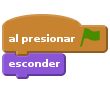
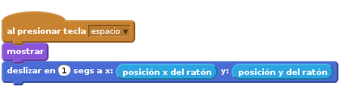
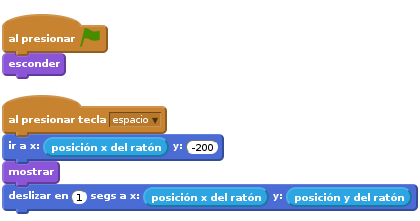
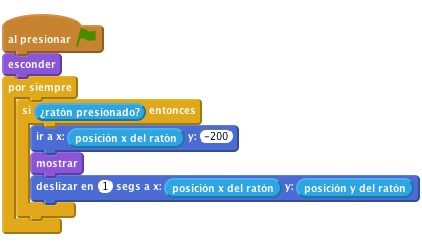
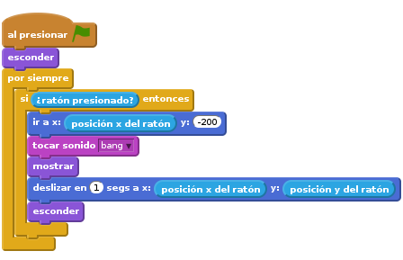
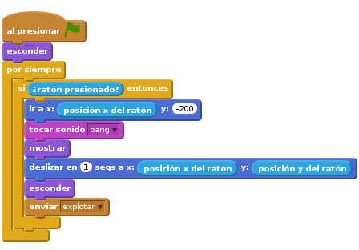
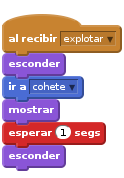
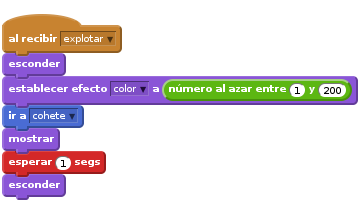
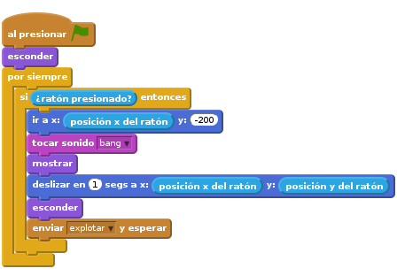

Introducción
En este proyecto crearemos un espectáculo de fuegos artificiales sobre una ciudad.

PASO 1: Crea un cohete que vuele hacia el ratón
Vamos a importar las imágenes que necesitaremos para el juego
Progreso
- Empieza un nuevo proyecto Scratch. Borra el gato haciendo click con el botón derecho y pulsando Borrar.
- Cambia el fondo por outdoor/city-with-water
- Usa el botón
Cargar objeto desde archivopara añadir un objeto Cohete en el proyecto (usa el disfraz Resources/rocket.png). Haz que el cohete se esconda al pulsar la bandera verde.

Ahora queremos que el cohete se mueva hacia el ratón cuando se haga click. Añade un bloque de control
al presionar tecla espacio, y dentro, haz que el cohete apareza y se deslice hacia la posición del ratón.
Prueba tu proyecto
Pulsa la bandera verde, pon el ratón en el escenario y pulsa la tecla espacio.
- ¿Aparece el cohete y se mueve hasta el ratón?
- ¿Qué pasa si mueves el ratón a otra posición y pulsas espacio otra vez?
Progreso
Los fuegos artificiales normalmente no vuelan de un lado a otro: Suben en línea recta. Vamos a asegurarnos de que el cohete siempre vuela hacia el ratón desde la parte de abajo de la pantalla. Antes de mostrar el cohete, usa el bloque
ir apara hacer que se mueva hasta la parte de abajo, pero se quede en la misma posición horizontal.
Prueba tu proyecto
Pulsa la bandera verde, pon el ratón en el escenario y pulsa la tecla espacio.
- ¿Vuela el cohete hacia el ratón desde la parte de abajo de la pantalla?
- ¿Qué pasa si mueves el ratón a otra posición y pulsas espacio otra vez?
Progreso
Ahora vamos a disparar los cohetes con el ratón, en vez de usando la tecla espacio. Para eso, podemos envolver nuestro programa en un bloque
por siempre si ratón presionado. Después, cambia el bloqueal presionar tecla espaciopor un bloqueAl presionar BANDERA VERDE. Por último, asegúrate de que el cohete se esconde cuando empieza el juego.
Prueba tu proyecto
Pulsa la bandera verde y haz click con el botón del ratón sobre el escenario. Haz click otra vez en otro sitio.
Cosas para probar
- Haz que unos cohetes vayan más deprisa o más despacio que otros.
- Intenta cambiar a dónde se mueve el cohete antes de dispararse hacia el ratón, para que haga una pequeña curva mientras vuela.
Guarda tu proyecto
PASO 2: Hacer que el cohete explote
Progreso
El primer paso para hacer que el cohete explote es que reproduza el sonido ‘bang’ (Resources/bang.wav) antes de empezar a moverse. Después, tiene que desaparecer cuando llega a la posición del ratón. Para importar un sonido nuevo ve a la pestaña Sonidos y haz click en el botón
Cargar sonido desde archivo.
Ahora, haz que el cohete envíe un mensaje cuando explota. Haremos algo con ese mensaje después (recibirlo)

Prueba tu proyecto
Pulsa la bandera verde. Comprueba que el cohete hace ruido y se esconde cuando llega a la posición del ratón.
Progreso
- Crea un nuevo objeto desde un fichero, Recursos/firework1.png
Cuando reciba el mensaje explotar, debería esconderse y moverse hacia la posición del cohete usando un bloque ir a, aparecer y desaparecer un segundo después.

Prueba tu proyecto
¡Lanza un nuevo cohete!.
- ¿Aparece el dibujo de la explosión cuando el cohete explota?
- ¿Qué pasa si arrastras el ratón con el botón pulsado? (No te preocupes, arreglaremos esto en un rato).
Guarda tu proyecto
PASO 3: Haz que cada explosión sea única
Ahora queremos que cada explosión sea única, usando el bloque
establecer efecto color, y haciendo que elija un color al azar entre 1 y 200 antes de mostrarse.
Prueba tu proyecto
Pulsa la bandera verde. ¿Tiene cada explosión un color diferente?
Progreso
- Vamos a usar los disfraces para añadir más tipos de explosiones, usando Recursos/firework2.png y Recursos/firework3.png, y cambiando entre ellas para cada cohete antes de mostrarlas.
Prueba tu proyecto
¡Lanza un cohete!
¿Explota cada cohete de una manera distinta?
Progreso
Por último, vamos a a hacer que la explosión se haga más grande después de que el cohete explote! En vez de esperar un segundo, pon el tamaño del objeto a 5% antes de mostrarlo y luego, cuando lo muestras, aumenta el tamaño por 2 cincuenta veces, usando un bloque
repetir.![al recibir [explotar v]
esconder
establecer efecto [color v] a (número al azar entre (1) y (200))
ir a [cohete v]
mostrar
fijar tamaño a (5) %
repetir (50)
cambiar tamaño por (2)
fin
esconder](07ae72014da2a7676a0481729701b92823607521.png)
Prueba tu proyecto
Pulsa la bandera verde.
- ¿Crece el gráfico de la explosión desde el centro hacia afuera poco a poco?
Cosas para probar
- Intenta hacer cada explosión todavía más distinta cambiando el tamaño y la velocidad de la explosión.
Guarda tu proyecto
PASO 4: Arreglando el problema de la señal explotar
¿Te acuerdas de que antes vimos un fallo (bug) cuando el botón del ratón se quedaba pulsado?
Esto pasa porque cuando el cohete envía la señal de su explosión, inmediatamente va a repetir el bucle “si” y mover el cohete a la parte de abajo del escenario. Y esto pasa antes de que la explosión se mueva a la posición del cohete.
Progreso
Para arreglarlo, podemos reemplazar el bloque enviar con un bloque enviar y
esperar. Así, el bucle no se repetirá hasta que el objeto explosión termine de explotar.
Prueba tu proyecto
Pulsa la bandera verde y mueve el ratón por el escenario mientras mantienes apretado el botón.
- ¿Aparece ahora la explosión en el sitio adecuado y en el momento correcto?
Guarda tu proyecto
¡Bien hecho, has acabado! Ahora ¡Disfruta de tu juego!
No olvides que puedes compartir el juego con tu familia y amigos pulsando el botón Compartir en la barra de herramientas.